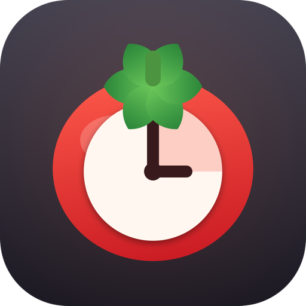
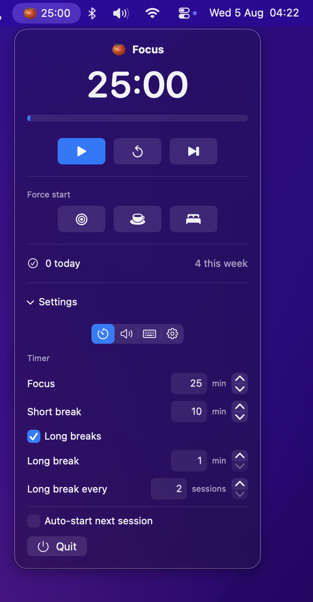

A native macOS menu bar Pomodoro timer. SwiftUI, no dependencies, no Dock icon.

The time ticks in the menu bar, its emoji following the phase. Show or hide the tomato, the minutes and the seconds independently.
Give focus, short break and long break their own menu bar text colour, picked from a row of swatches. Leave one alone and it keeps the menu bar's colour, following light and dark.
The end-of-session banner carries a Start button — a finished focus rolls into a break without opening the menu.
Start, pause, force focus or force break from anywhere. Registered through Carbon, so no Accessibility permission is asked for.
Pick any system sound — or none — for the end of a focus, a short break and a long break, each with a preview button.
Jump straight into a focus or a break at any point in the cycle. Long breaks can be turned off entirely.
Daily and weekly completed-session counts, kept for the last 30 days and shown right in the popover.
Checks GitHub once a day, or on demand, then downloads, verifies and installs the new version in place.
Plain SwiftUI, a few hundred lines, no frameworks vendored in. It stays out of the Dock and off your CPU.
curl -L -o /tmp/Pomodoro.zip https://github.com/kossa/pomodoro/releases/latest/download/Pomodoro.zip ditto -x -k /tmp/Pomodoro.zip /Applications xattr -dr com.apple.quarantine /Applications/Pomodoro.app open /Applications/Pomodoro.app
ditto rather than unzip: it unpacks macOS bundles without leaving
._* files behind, which would invalidate the app's code signature. The
xattr step is needed because the app is ad-hoc signed rather than notarized.
Requires macOS 14 or later on Apple silicon.
| Feature | Pomodoro | Other menu bar timers |
|---|---|---|
| Native SwiftUI | ✅ | Varies |
| No Dock icon | ✅ | ❌ |
| No Accessibility permission | ✅ | ❌ |
| Self-updating | ✅ | Varies |
| Zero dependencies | ✅ | ❌ |